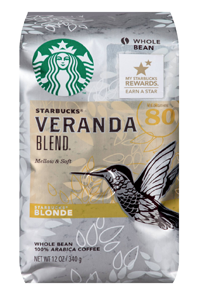
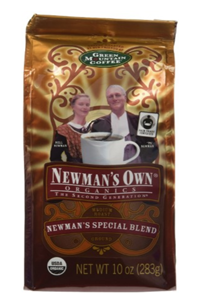
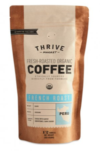
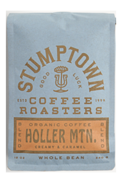
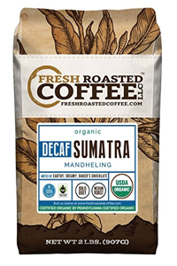

The French Press is a coffee brewing device patented by Italian designer Attilio Calimani in 1929. Also known as a coffee press or cafetière, the French word for coffee maker or pot.
How it Works...
Coffee is brewed by placing coarsely ground coffee beans into the empty glass beaker and adding hot water. The brewing time is about four minutes. Then the mesh plunger or piston is pressed down, to separate the grounds and hold them at the bottom of the beaker.
A French Press works best with coffee of a coarser grind than does a drip brew coffee filter, about the consistency of course salt. Finer grounds, when immersed in water, will cause the coffee to taste bitter.
It is believed that the optimum amount of time for brewing the coffee is around four minutes, and some consider the coffee spoiled if it sits in the press for longer than twenty minutes.
It All Starts With the Beans...
The only way to have a truly great cup of coffee is to start with good coffee beans.

Light Roast

Medium Roast

Bold Roast

Bold Roast

Organic Decaf
From Bold to Decaf, French Roast to Venezuelan, a variety of good coffee beans can be found easily these days in local cofee shops and online.